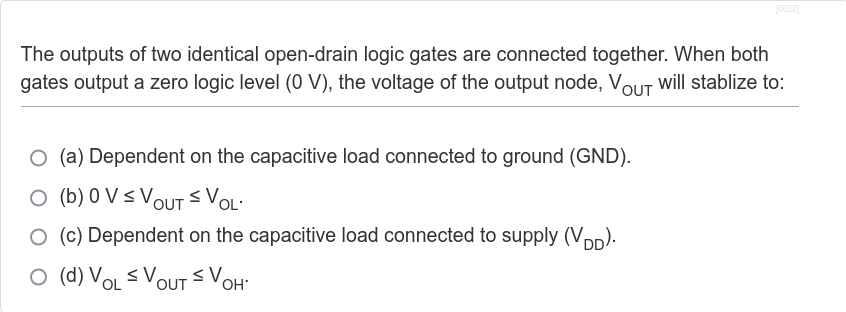
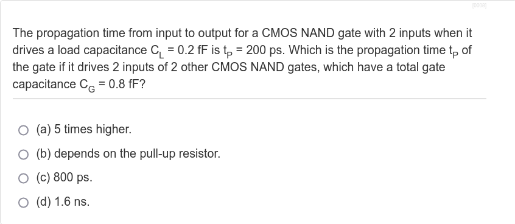
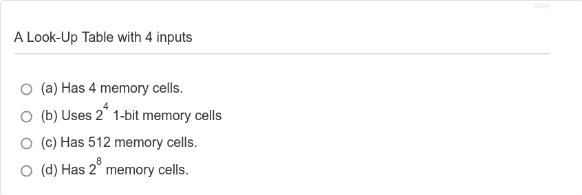
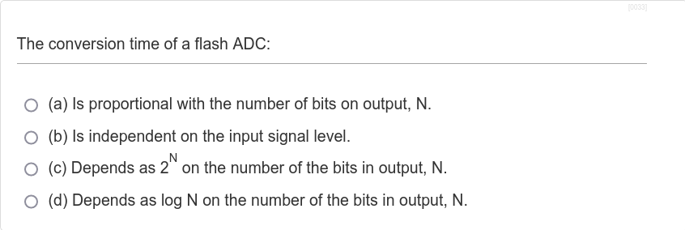
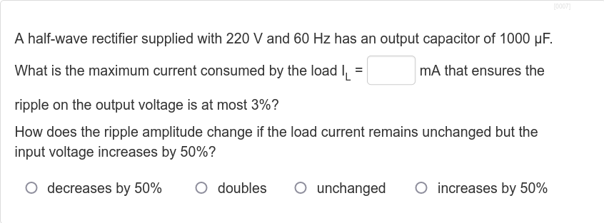
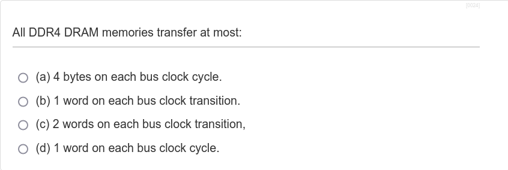
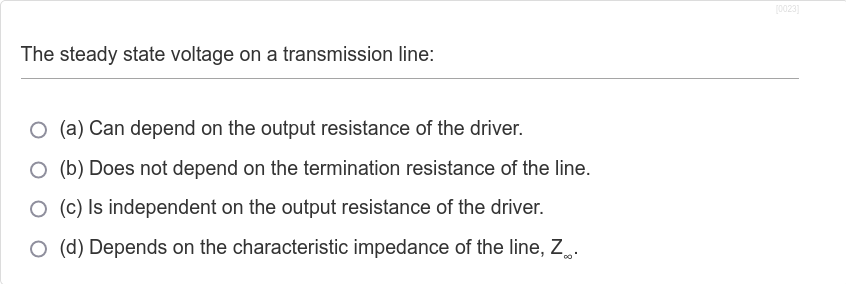
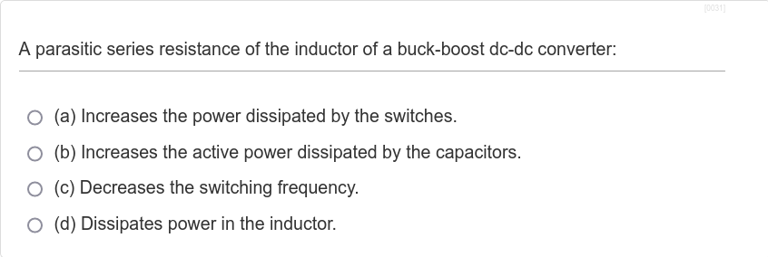
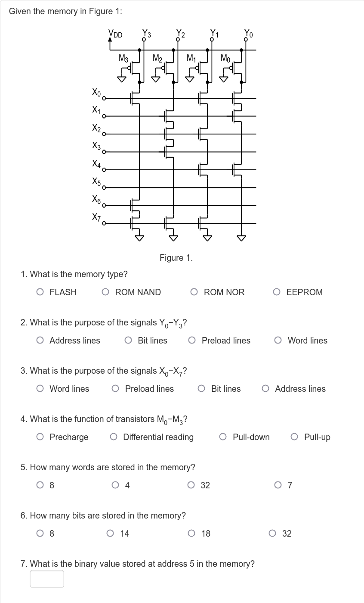

41. To'liq imtihon: 2021-yil 13-iyul
- Qog'oz, ruchka va kalkulyator oling. Soatni qo'ying.
- Hamma savolni yechimni ochmasdan yeching. Javobni qog'ozga yozing.
- Keyin "Yechim" larni birma-bir ochib tekshiring. Har xato uchun qavsdagi darsni qayta o'qing.
- Bir necha kundan keyin shu imtihonni yana bir marta yeching. Ikkinchi safar hammasi to'g'ri chiqishi kerak.
Bu imtihon 8 ta testdan va bitta katta masaladan (7 ta kichik savolli xotira sxemasi) iborat. Testda bitta to'g'ri javob bor.
1-savol. Open-drain chiqishlar birga ulangan

Tarjima: ikkita bir xil open-drain darvozaning chiqishlari bir-biriga ulangan. Ikkalasi ham 0 (0 V) chiqarsa, VOUT qayerda barqarorlashadi?
Yechim
Javob: (b) 0 V ≤ VOUT ≤ VOL.
Ikkala darvozaning pastki tranzistori yoqiq. Ikkita yoqiq tranzistor parallel ulangan, demak umumiy qarshilik har biridan kichik. Bitta darvoza yolg'iz o'zi ham chiqishni VOL dan pastda ushlay oladi (VOL ta'rifi shu). Ikkitasi birga ushlasa, chiqish undan ham pastroq bo'ladi. Sig'im faqat o'tish paytida ta'sir qiladi, barqaror holatga emas. (6-dars)
2-savol. NAND darvoza kechikishi va yuklama

Tarjima: NAND darvozaning kechikishi CL = 0.2 fF yuklamada 200 ps. Endi u ikkita boshqa NAND ning kirishlarini boshqaradi, ularning jami sig'imi CG = 0.8 fF. Yangi tP qancha?
Yechim
Javob: (c) 800 ps.
tP = 0.69·RON·CL, ya'ni kechikish yuklama sig'imiga to'g'ri proporsional. Yuklama 0.2 fF dan 0.8 fF ga, ya'ni 4 marta oshdi. Shuning uchun kechikish ham 4 marta oshadi: 4 · 200 ps = 800 ps. "Jami" (total) so'ziga e'tibor bering: 0.8 fF allaqachon ikkala kirish yig'indisi, uni yana 2 ga ko'paytirmang. (6-dars)
3-savol. 4 kirishli LUT

Tarjima: 4 kirishli LUT (qidiruv jadvali) haqida qaysi gap to'g'ri?
Yechim
Javob: (b) 24 ta 1 bitli xotira katagi.
LUT bu kichik xotira: 4 ta kirish adres vazifasini bajaradi, 4 bitli adres 24 = 16 ta katakni tanlay oladi. Har katakda bitta bit (funksiyaning o'sha kirishdagi qiymati). (10-dars)
4-savol. Flash ADC ning o'zgartirish vaqti

Tarjima: flash ADC ning o'zgartirish vaqti nimaga bog'liq?
Yechim
Javob: (b) kirish signal sathiga bog'liq emas.
Flash ADC hamma solishtirishni bir vaqtda (parallel) bajaradi: 2N − 1 ta komparator bir zumda ishlaydi. Shuning uchun vaqt N ga ham, signal qiymatiga ham bog'liq emas. Taqqoslang: SAR ning vaqti N ga proporsional (har taktda 1 bit), tracking ADC niki esa signal o'zgarishiga bog'liq. (18-dars)
5-savol. Bir yarim davrli to'g'rilagich (hisob masala)

Tarjima: bir yarim davrli to'g'rilagich 220 V, 60 Hz tarmoqdan ishlaydi, chiqishida 1000 µF kondensator bor. Chiqishdagi ripple ko'pi bilan 3 % bo'lishi uchun yuklama eng ko'pi bilan qancha tok olishi mumkin (mA)? Yuklama toki o'zgarmay, kirish kuchlanishi 50 % oshsa, ripple amplitudasi qanday o'zgaradi?
Yechim
- Ripple formulasi: VR = IL·Δt / C. Bir yarim davrlida Δt = 1/f = 1/60 s (ikki yarim davrlida 1/(2f) bo'lardi).
- 220 V bu samarali (RMS) qiymat. Cho'qqi: 220 · √2 = 311 V.
- 3 % ripple: VR = 0.03 · 311 = 9.33 V.
- IL = C · VR · f = 1000·10−6 · 9.33 · 60 = 0.56 A = 560 mA.
- Ikkinchi savol: VR = IL/(f·C) formulasida kirish kuchlanishi yo'q. Tok bir xil qolsa, ripple unchanged (o'zgarmaydi).
Diqqat: kuchlanish oshganda ripple foizi kamayadi, lekin savol amplitudani (voltda) so'rayapti. (31-dars)
6-savol. DDR4 xotira

Tarjima: hamma DDR4 DRAM xotiralari ko'pi bilan qancha ma'lumot uzatadi?
Yechim
Javob: (b) har bir takt o'tishida (transition) 1 so'z.
DDR = Double Data Rate: ko'tariluvchi frontda ham, tushuvchi frontda ham bittadan so'z. Bitta takt siklida ikkita o'tish bor, demak siklga 2 so'z. (d) "siklga 1 so'z" oddiy SDRAM. (a) noto'g'ri, chunki so'z kengligi har xil bo'lishi mumkin ("hamma DDR4" deyilgan). (22-dars)
7-savol. Uzatish liniyasidagi barqaror kuchlanish

Tarjima: uzatish liniyasidagi barqaror (steady-state) kuchlanish haqida qaysi gap to'g'ri?
Yechim
Javob: (a) drayverning chiqish qarshiligiga bog'liq bo'lishi mumkin.
Hamma aks etishlar tugagach, liniya oddiy sim bo'lib qoladi va Z∞ ning ahamiyati yo'qoladi, shuning uchun (d) noto'g'ri. Agar uchida terminatsiya rezistori bo'lsa, tok oqadi va kuchlanish bo'lgich hosil bo'ladi: V = VA·RT/(RO + RT). Bu formulada RO ham, RT ham bor, shuning uchun (b) va (c) noto'g'ri. Uchi ochiq bo'lsa tok yo'q va V = VA, shuning uchun "bo'lishi mumkin" degan so'z to'g'ri. (25-dars)
8-savol. Buck-boost dagi induktivlik qarshiligi

Tarjima: buck-boost o'zgartirgich induktivligining parazit (keraksiz) ketma-ket qarshiligi nima qiladi?
Yechim
Javob: (d) induktivlikning o'zida quvvat sochadi (issiqlikka aylantiradi).
Induktivlik orqali tok oqadi, unga ketma-ket qarshilik R bor: P = I²·R isrof bo'ladi, aynan shu yerda. Chastotani tashqi boshqaruv sxemasi beradi, shuning uchun (c) noto'g'ri. Ideal kalit va kondensator aktiv quvvat sochmaydi, shuning uchun (a) va (b) noto'g'ri. (34-dars)
9-savol. Xotira sxemasi (katta masala, 7 ta kichik savol)

Tarjima: 1) xotira turi qanday? 2) Y0–Y3 signallari nima vazifada? 3) X0–X7 signallari nima vazifada? 4) M0–M3 tranzistorlari nima vazifada? 5) xotirada nechta so'z saqlanadi? 6) nechta bit saqlanadi? 7) adres 5 da qanday ikkilik qiymat saqlangan?
Yechim
- ROM NAND: har ustunda tranzistorlar ketma-ket zanjir bo'lib yerga boradi (NOR da ular parallel bo'lardi).
- Y = bit lines: qiymat shu simlardan o'qiladi.
- X = word lines: tranzistorlar gate larini boshqaradi, qatorni tanlaydi.
- M = pull-up: bitline ni VDD ga tortib turuvchi "rezistor".
- 8 ta wordline → 8 so'z.
- Har so'zda 4 bit (4 ta bitline) → 8 · 4 = 32 bit.
- Adres 5 → X5 qatori. Bu qatorda tranzistor yo'q, hech bir zanjir uzilmaydi, hamma bitline yerda qoladi → 0000.
Qoida (NAND ROM): qatorda tranzistor bor ustun = 1, yo'q ustun = 0. To'liq jadval va tushuntirish: 21-dars.
Natijani baholang
| Savol | Javob | Mavzu | Xato bo'lsa o'qing |
|---|---|---|---|
| 1 | b | open-drain | 6 |
| 2 | c (800 ps) | tP ∝ CL | 6 |
| 3 | b | LUT | 10 |
| 4 | b | flash ADC | 18 |
| 5 | 560 mA; unchanged | ripple | 31 |
| 6 | b | DDR | 22 |
| 7 | a | barqaror holat | 25 |
| 8 | d | buck-boost isrofi | 34 |
| 9 | ROM NAND, bit lines, word lines, pull-up, 8, 32, 0000 | ROM | 21 |
📝 Konspekt (shu imtihondan o'rganiladigan qoidalar)
- Open-drain chiqishlar birlashsa va ikkalasi 0 bo'lsa: VOUT ≤ VOL.
- Flash ADC vaqti N ga ham, signalga ham bog'liq emas. SAR: ∝ N.
- DDR: har front (o'tish)da 1 so'z = siklga 2 so'z.
- Barqaror kuchlanish Z∞ ga bog'liq emas, RO va RT ga bog'liq bo'lishi mumkin.
- Induktivlikning parazit qarshiligi induktivlikning o'zida I²R sochadi.
- NAND ROM: ketma-ket zanjir; tranzistor bor = 1, yo'q = 0; so'zlar = wordline soni, bitlar = so'zlar × bitline lar.